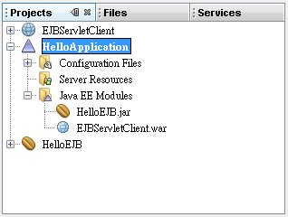

- HelloServlet.java
package onlyfun.caterpillar;
import java.io.*;
import javax.servlet.*;
import javax.servlet.http.*;
import javax.ejb.EJB;
public class HelloServlet extends HttpServlet {
@EJB
private HelloBean hello;
protected void processRequest(HttpServletRequest request,
HttpServletResponse response)
throws ServletException, IOException {
response.setContentType("text/html;charset=UTF-8");
PrintWriter out = response.getWriter();
out.println("<html>");
out.println("<head>");
out.println("<title>Servlet HelloServlet</title>");
out.println("</head>");
out.println("<body>");
out.println("<h1>" + hello.doHello("Orz...") + "</h1>");
out.println("</body>");
out.println("</html>");
out.close();
}
protected void doGet(HttpServletRequest request,
HttpServletResponse response)
throws ServletException, IOException {
processRequest(request, response);
}
protected void doPost(HttpServletRequest request,
HttpServletResponse response)
throws ServletException, IOException {
processRequest(request, response);
}
public String getServletInfo() {
return "Short description";
}
}
若為同一個應用程式，您的Bean不需標示為@Remote，而可以使用@Local來標示，這可以省去遠端介面的RMI呼叫成本，也就是HelloBean的定義可以改為：
- HelloBean.java
package onlyfun.caterpillar;
import javax.ejb.Local;
@Local
public interface HelloBean {
public String doHello(String message);
}
接著您將Web應用程式的WAR檔，EJB模組的JAR檔，一併封裝為EAR檔，部署為一個Java EE應用程式，以NetBeans為例，就是建立一個Enterprise Application專案，並將Web應用程式及EJB模組加入成為一個Java EE模組（Enterprise Application專案上按右鍵選Add Java EE Module）：

將專案部署上去之後就可以直接請求Servlet，在NetBeans上部署之後長這樣：